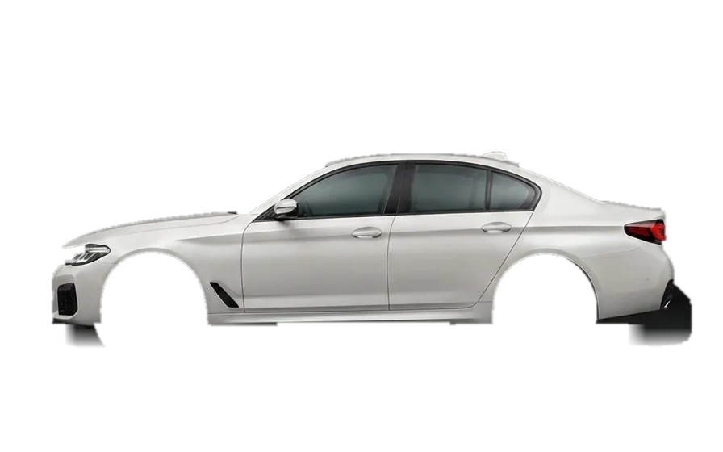
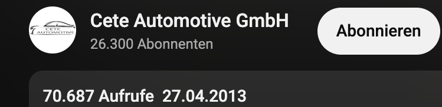

Das Original
Wir haben die App-Tieferlegung nicht kopiert — wir haben sie entwickelt. Du bekommst die Quelle, nicht den Nachbau.
Dein Luftfahrwerk kann bis zu 55 mm tiefer — ab Werk. ASC schaltet es frei: absenken per App, ab eingestelltem Tempo automatisch zurück auf Serienhöhe. Kein Umbau. Jederzeit rückrüstbar.
Vom Erfinder · ECE-geprüft · 100 % rückrüstbar

Zieh den Regler — genau so steuerst du die Höhe später per App.
Stell dir das nächste Treffen vor: Du rollst rein auf Serienhöhe, ziehst das Handy raus — und er legt sich vor allen ab. Kein Schraubenschlüssel, kein Kompromiss am Montag. Genau dieses Gefühl ist der Grund, warum es ASC gibt.
Dein Luftfahrwerk hebt und senkt dein Auto jeden Tag — beim Beladen, auf der Autobahn, im Sport-Modus. Diese Höhen beherrscht dein Original-Steuergerät ab Werk. Die Werkshöhe ist kein technisches Limit — sie ist ein Kompromiss-Setting, für den Durchschnitt, nicht für dich.
ASC ist die OEM-Direktsteuerung: ein Modul vom Erfinder, das mit deinem Original-Steuergerät spricht — in seiner Sprache, über seine Fahrprofile. Kein Fremd-Dongle im OBD-Port. Kein Umbau. Kein Roheingriff.
Wir bauen dein Fahrwerk nicht um. Wir schalten frei, was es ab Werk beherrscht.
↓Die wichtigste Frage — dein Fahrwerk ist mehrere tausend Euro wert. Deshalb beantworten wir sie zuerst und vollständig. Kurz gesagt: ASC steuert dein Fahrwerk so, wie dein Auto es selbst tut — nicht dagegen. Warum es dein Luftfahrwerk schont, in drei Punkten:
Keine rohen Signale, kein Eingriff in die Hardware — ASC steuert dein Fahrwerk über die werkseigene Steuerung und ihre Original-Fahrprofile. Das heißt: Es gibt nur Befehle, die dein Auto ohnehin kennt und ab Werk erlaubt. Luftbälge, Ventile und Kompressor arbeiten weiter in ihrem vorgesehenen Bereich — nicht darüber hinaus. Genau deshalb entsteht keine Belastung über die Werksvorgaben hinaus.
Ab eingestelltem Tempo automatisch zurück auf Serie, für Bordstein und Langstrecke per App anheben. Tief ist eine Entscheidung, kein Dauerzustand — das hält die Belastung moderat.
Nichts wird geschnitten, gebohrt oder dauerhaft umprogrammiert — die Fahrwerks-Hardware bleibt unangetastet. Modul raus, Fahrwerk wie ab Werk, auch für Verkauf oder Leasing. Was sich spurlos rückgängig machen lässt, kann dein Fahrwerk auch nicht dauerhaft verändern.
Jede Tieferlegung — Koppelstangen, Codieren oder Modul — bedeutet bei Dauer-Tiefstand mehr Reifenverschleiß und Balg-Last. Der Unterschied: Bei ASC entscheidest du, wann dein Auto tief steht. Genau das macht sie zur schonenden.
Dein Luftfahrwerk bleibt dein Luftfahrwerk — du bekommst die Kontrolle über die Höhe dazu.
↓Es gibt drei Wege, ein Luftfahrwerk tiefer zu legen. Zwei sind billiger. Beide kosten dich das, wofür du das Luftfahrwerk bezahlt hast: die Verstellbarkeit.
Auto ausgetrickst oder fest codiert
Original-Steuergerät
Dauerhaft tief (statisch)
Dynamisch — per App
Nur per Werkstatt
Automatisch ab Tempo
Aufsetzen, täglich
+30 mm per Tap
Fehler, Neu-Kalibrierung
Bleibt in Werksprofilen
Nur mit Aufwand
100 % — wie ab Werk
Die 50-€-Lösung macht aus deinem dynamischen Luftfahrwerk ein statisches — dauerhaft tief, alle Nachteile, kein Vorteil. Du hast tausende Euro für ein Fahrwerk bezahlt, das sich verstellen kann. ASC ist der einzige Weg, der dir diese Fähigkeit lässt — und sie erweitert.
Berechtigter Einwand — es gibt ein deutlich günstigeres App-Modul zum Einstecken. Der Preisunterschied liegt nicht in der App. Er liegt darunter:
Einsteck-Gerät (jedes Mal in OBD)
Fest & unsichtbar verbaut
Standard-Diagnose-Befehle
OEM-Direktsteuerung
Härter & unruhig
Serien-Komfort bleibt
Keine echte Prüfung fürs Tieferlegen
Offiziell geprüft & zugelassen
Bleibt, wie eingestellt
Automatisch ab Tempo
Nur Mercedes
Airmatic & Co.
Als Hersteller entwickeln wir die Steuerung selbst — präzise, app-gesteuert (BLE) und ECE-geprüft. Was hinter dem Modul steht:
Wir haben die App-Tieferlegung nicht kopiert — wir haben sie entwickelt. Du bekommst die Quelle, nicht den Nachbau.
Entwicklung, Produktion und Support aus einer Hand in Henstedt-Ulzburg. Bei Fragen sprichst du mit den Leuten, die das Modul gebaut haben — nicht mit einem Zwischenhändler.
Die Steuerung nutzt die Werks-Fahrprofile deines Autos, statt sie zu übergehen — das hält den Eingriff schonend und präzise.
Mehrere behaupten, „die Ersten" zu sein. Wir zeigen es:
Erstes öffentliches Video — vor 13 Jahren wurde hier schon per App tiefergelegt.
Echter YouTube-Beweis · unbearbeitet
Original-Upload vom 27.04.2013 · diesen Datumsstempel vergibt YouTube, nicht wir · heute in HD ansehen ↗ASC-Gen 2 — komplett neue App, Verbindung per Bluetooth (BLE) statt WLAN.
ASC für zahlreiche Modelle mit Luftfahrwerk — Audi, Mercedes, BMW, Porsche u. v. m. — der ganze Weg öffentlich dokumentiert: Zum YouTube-Kanal ↗
Einen YouTube-Datumsstempel kann man nicht fälschen. Das ist der Unterschied zwischen „Original" sagen und Original sein.
„Schont es das Original-Fahrwerk?"
„Bisher bin ich sehr zufrieden … ab 120 km/h fährt er aufs Originalniveau rauf. Nicht billig, aber meines Erachtens die vernünftige Lösung, um das originale Luftfahrwerk zu optimieren."
— Mr.Miagy, Audi S7 ↗ Quelle: Motor-Talk-Forum„Wie aufwendig — und komme ich zurück?"
„Es tut genau das, was es soll … war relativ einfach zu verbauen und ist rückstandslos wieder entfernbar. Die App warnt sogar vor Einstellungen, die den Fahrmodus beeinflussen können."
— m4nii, Audi RS7 ↗ Quelle: Motor-Talk-Forum„Hält das auf Dauer?"
„Bei mir ist das Cete-Modul nun seit 3 Jahren in meinem S8 plus im Einsatz … insgesamt würde ich das Modul wieder kaufen."
— phil68, Audi S8 plus ↗ Quelle: Motor-Talk-ForumMercedes-Testimonial (Airmatic) — höchste Proof-Priorität, alle 3 bisherigen Stimmen sind Audi
↓Hier reden wir Klartext — keine Versprechen, die wir nicht halten können. Das Wichtigste in drei Punkten:
ASC wird ohne TÜV-Gutachten geliefert und ist im Bereich der StVZO nicht zugelassen — das sagen wir dir vor dem Kauf, nicht im Kleingedruckten. Der Betrieb auf öffentlichen Straßen liegt in Halter-Verantwortung.
Was dir dabei Ruhe gibt: per App abschaltbar, automatische Rückkehr, 100 % rückrüstbar — die Kontrolle bleibt jederzeit bei dir.
Die Hardware selbst trägt ein ECE-Prüfzeichen — ein anerkannter, internationaler Standard für Qualität und Sicherheit. Du baust dir nichts Unkontrolliertes ein.
Du entscheidest, wie und wann du unterwegs bist.
* Keine Rechtsberatung. Der Betrieb auf öffentlichen Straßen liegt in der Verantwortung des Halters. Legalitäts-Wording vor Live mit CETE/Anwalt final freigeben
↓Vier Schritte bis zur perfekten Höhe — und beim Einbau hast du die Wahl.
15 Sekunden: Marke, Modell, Baujahr — und du weißt sofort, ob dein Auto unterstützt wird.
Ganz entspannt beim Partner in deiner Nähe — oder du machst es selbst mit unserem Schritt-für-Schritt-Tutorial, das du beim Kauf direkt per Mail bekommst.
Einmal per BLE verbinden — und deine persönlichen Höhen-Profile anlegen.
Fertig — ab jetzt bestimmst du, wie er steht.
Du willst nicht selbst schrauben? Kein Problem — wir vermitteln dir einen Einbaupartner in deiner Nähe. Termin ausmachen, Auto hinbringen, tiefer wieder abholen.
Partnerliste / Karte einsetzen — ohne echte Namen vor Launch diese Box komplett entfernen
Show-Tiefe und Alltag in einem Auto. Möglich durch die OEM-Direktsteuerung — über dein Original-Steuergerät, kein Umbau, kein Fremd-Dongle, jederzeit rückrüstbar.
je nach Fahrzeug · inkl. MwSt. · Finanzierung ab ~XX €/Monat — Rate bestätigen
★★★★★ 4,89/5 · 312 Bewertungen ↗Jetzt sichern: Nach deinem Fitment-Check reservieren wir deinen Preis 7 Tage für dein Fahrzeug — mit 5 % Aktionsrabatt, wenn du in dieser Zeit bestellst.
ASC ist zu 100 % rückrüstbar — rückstandslos. Modul raus, Fahrwerk wie ab Werk, auch für Verkauf oder Leasing.
Kostenloser Fitment-Check: Marke, Modell, Baujahr eingeben — in 15 Sekunden siehst du, ob dein Auto passt, und bekommst dein persönliches Angebot (dein exaktes Modul, dein Fahrzeugpreis, dein Einbaupartner) per Mail. Kostenlos & unverbindlich.